All cases
span_j1_145_j2_095
3267 retained velocity records · three arms · stored-data inspector.
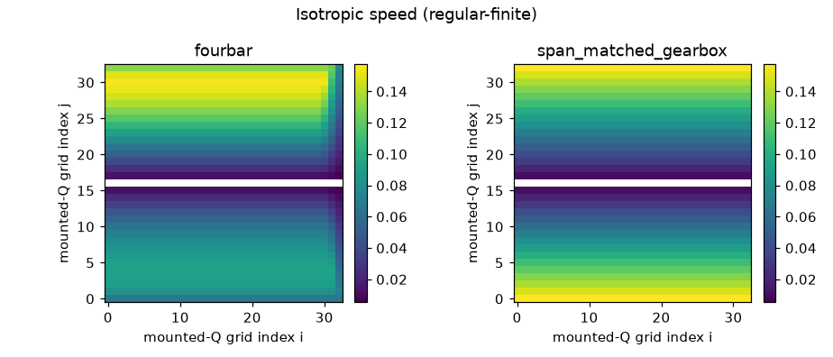
Primary isotropic speed on regular cells only. Identity-on-shared-Q reference with its own full finite range.
Identity-on-shared-Q reference with its own full finite range. Physical velocity status by mechanism.
Physical velocity status by mechanism.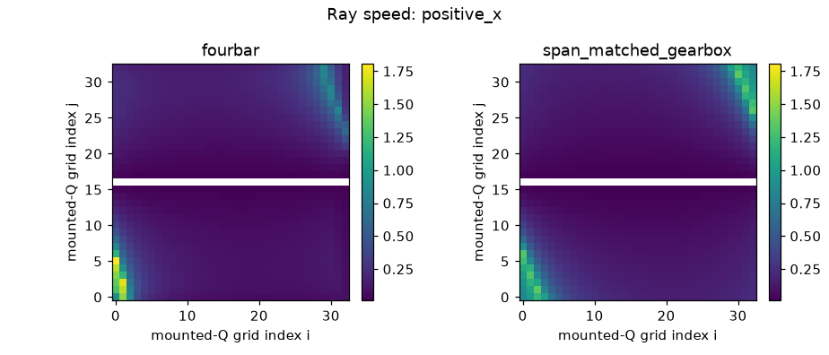
Primary ray speed (positive_x) on regular-finite cells.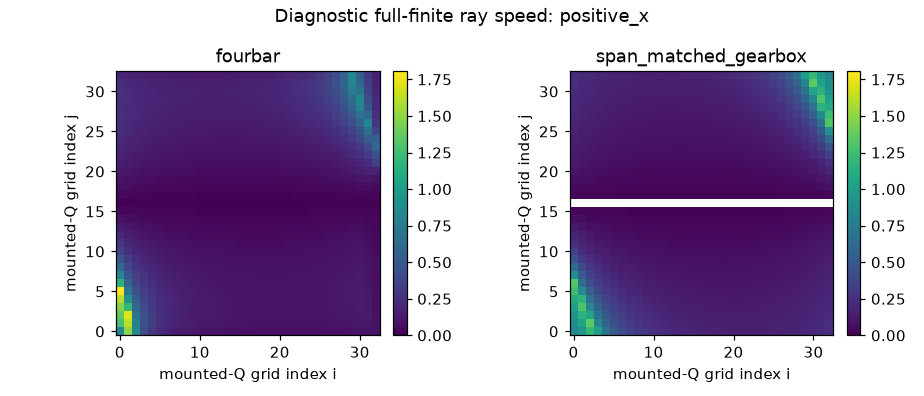
Diagnostic positive_x including near-singular finite values.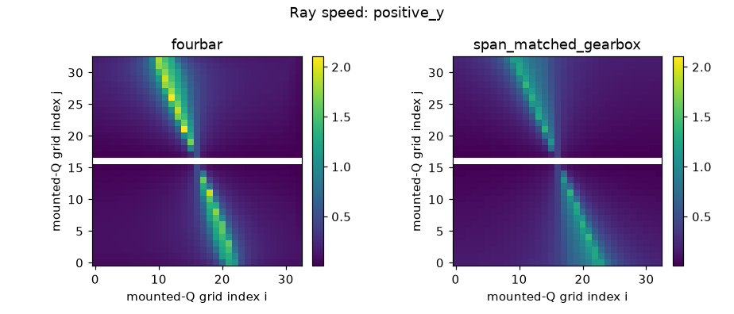
Primary ray speed (positive_y) on regular-finite cells.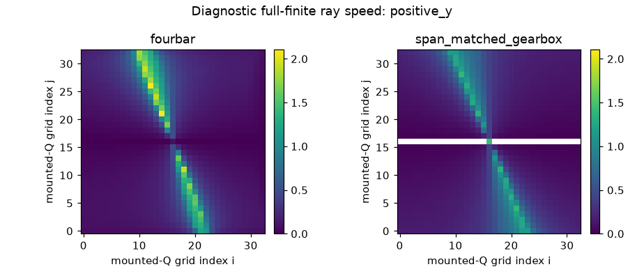
Diagnostic positive_y including near-singular finite values.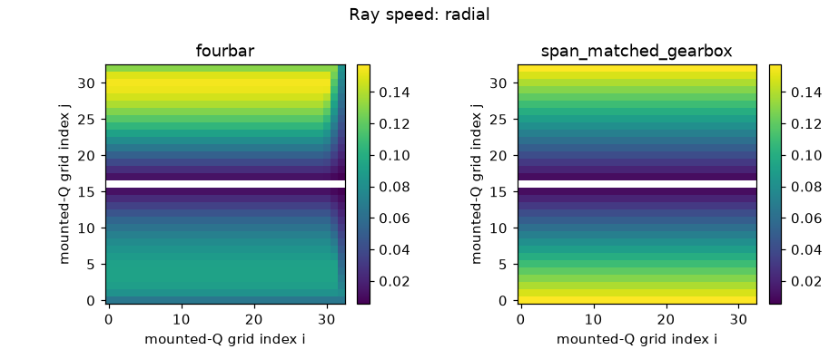
Primary ray speed (radial) on regular-finite cells.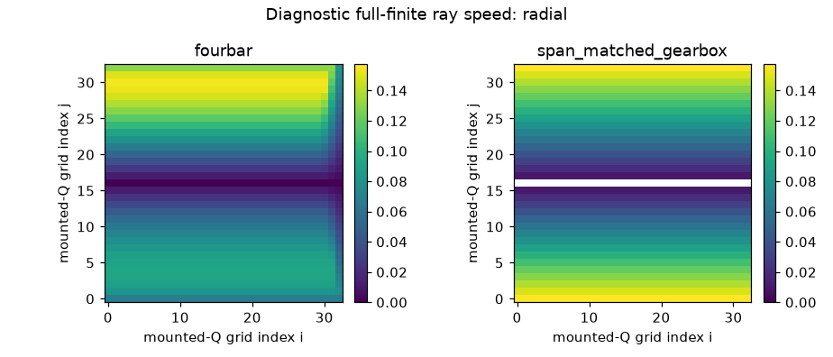
Diagnostic radial including near-singular finite values.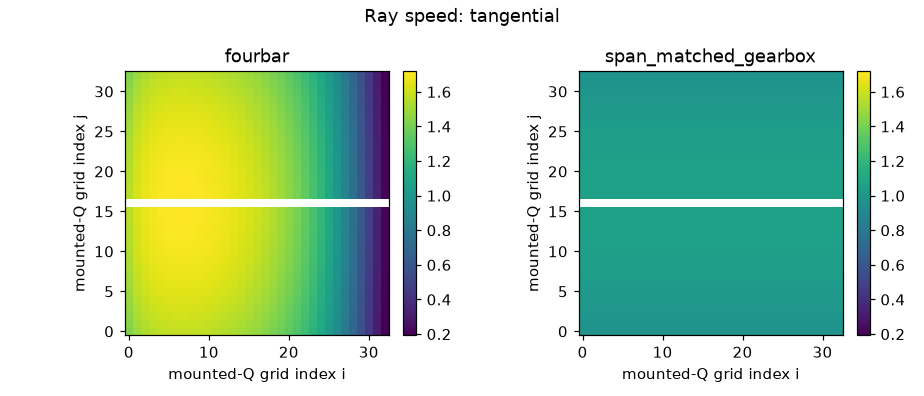
Primary ray speed (tangential) on regular-finite cells.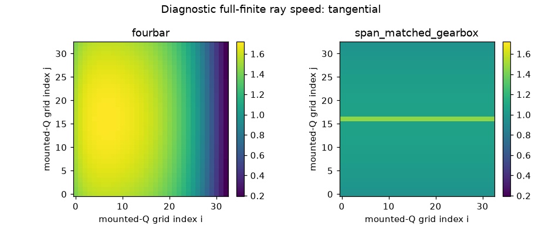
Diagnostic tangential including near-singular finite values.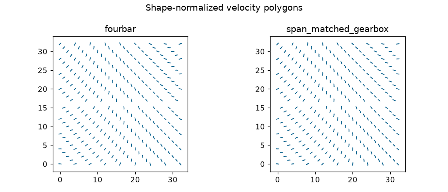
Shape-normalized velocity polygons (not magnitude).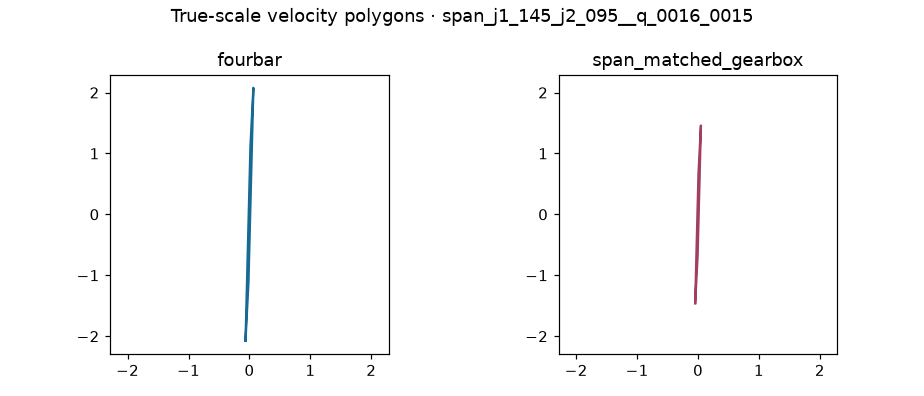
True-scale paired velocity polygons near grid center.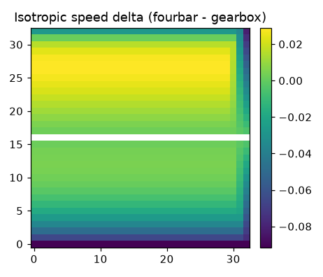
Paired isotropic-speed difference on regular cells.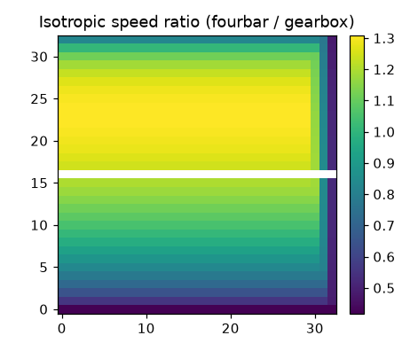
Paired isotropic-speed ratio on regular cells.